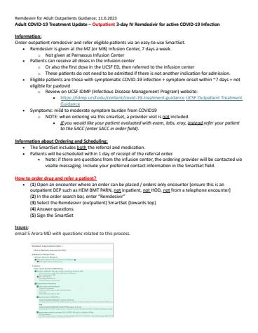

Guideline
COVID-19 Treatment Guidance

Hosted on idmp.ucsf.edu, no login. 5 pages · 1050 KB

Hosted on idmp.ucsf.edu, no login. 1 page · 329 KB
Note: This is the Infectious Diseases Management Program COVID-19 site, which will house treatment related guidance going forward. For Hospital Epidemiology and Infection prevention's COVID-19 page, which houses guidelines around topics including disinfection, PPE, precautions, and other infection prevention related topics, please click here for Hospital Epidemiology and Infection Prevention's COVID-19 Page
- For treatment of patients with COVID-19 please refer to the IDSA Guidelines (NIH COVID-19 Guidelines are no longer being updated).
- Table 37 highlights recommended therapies for different levels of severity.
- Figure 2 outlines recommended therapy for ambulatory patients with mild to moderate COVID-19, stratified by risk of progression to severe disease.
- For guidance on pre-exposure prophylaxis (Pemivibart) for select populations refer to the attached document above
- For information on eligibility and ordering of outpatient remdesivir refer to the above attached file.
------------------------------------------------------------------------------------------------------------------------------------------
Remdesivir Ordering Guidance for Outpatient Adults
- Remdesivir is given at the MZ or MB Infusion Center, 7 days a week
- Not given at Parnassus Infusion Center
- Eligibility criteria: Patients must meet all of the below criteria:
- Symptomatic COVID-19 infection with symptom onset within 7 days
- High risk for progression to severe disease based on CDC risk factors https://www.cdc.gov/covid/risk-factors/
- Not eligible for nirmatrelvir-ritonavir (Paxlovid)
- Mild-moderate disease
- A provider visit is NOT included in the infusion visit. If you would like your patient formally evaluated with exam, labs, x-ray, instead order REF778 or refer your patient to the SACC
- For ordering guidance see above attached document